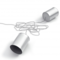

Plateformes / Windows /
Alternatives au courriel
Recommandations libres

Bitmessage
Le service de messagerie P2P décentralisé et chiffré basé sur la technologie Bitcoin.


Riot
Riot is a secure collaboration app for group chat, file transfer and voice/video conferencing built on the decentralized Matrix ecosystem, p…
Notes
Bitmessage est une alternative prometteuse au courriel, mais il n'a pas encore été vérifié par des professionnels de la sécurité. À utiliser à vos risques et périls. Si vous décidez d'essayer Bitmessage, assurez-vous de générer un ID complètement aléatoire pour réduire considérablement la probabilité de collisions d'identité.
RetroShare n'a pas été soigneusement vérifié par des professionnels de la sécurité.
Propriétaire